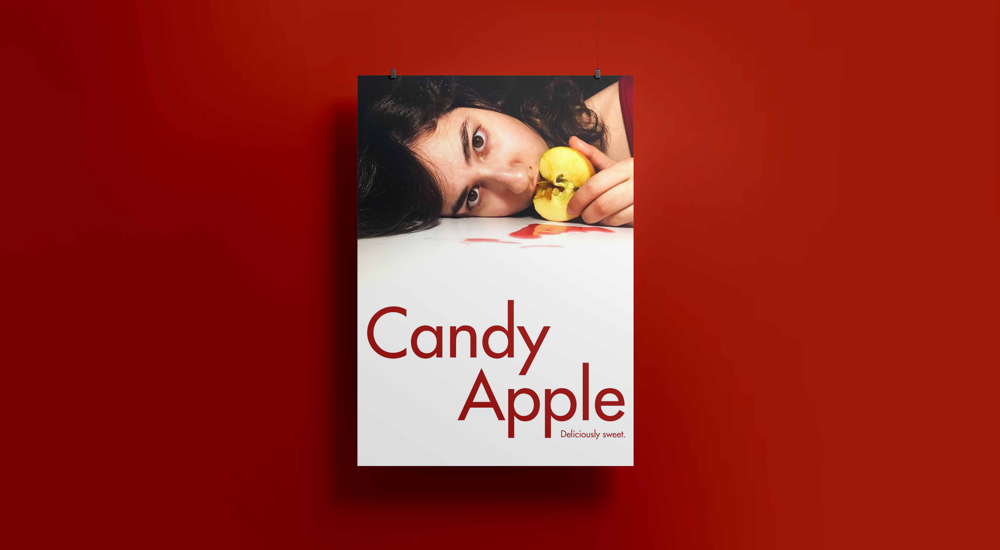
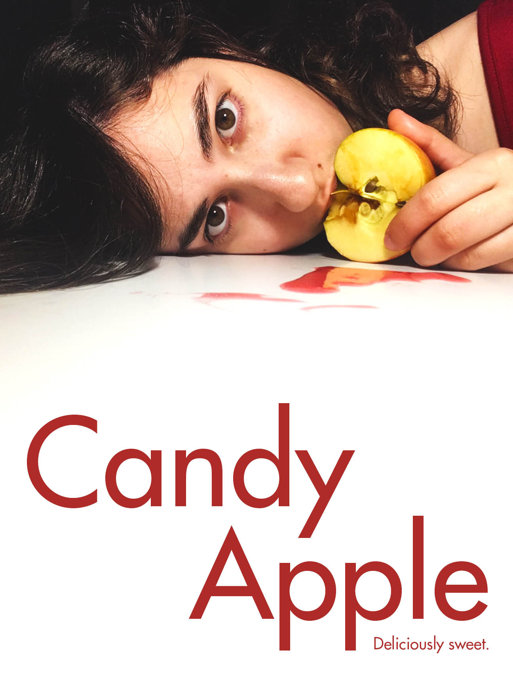

Candy Apple
Poster Design
February 2019
18"x24"
Candy Apple is a conceptual art poster designed to analyse marketing through a critical lens. This work is part of a larger exploration into how non-edible substances are marketed within the framework of food-based products and aiding in the rise of dangerous consumption trends such as the Tidepod Challenge of 2019. Through the deconstruction of visual and name-oriented marketing strategies, Candy Apple examines the problems with selling a product under the guise of something else entirely.
